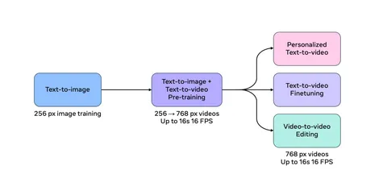

Кажется, что после ECCV 2024 только ленивый не написал о Movie Gen. Тем не менее далеко не все авторы ссылаются на оригинальный технический отчёт и описывают подробности.
Movie Gen — большая модель на 30 миллиардов параметров, которую исследователи из Meta* разработали для генерации видео. Она может создавать клипы длительностью до 16 секунд с частотой 16 кадров в секунду и разрешением 1080p. Новой модели можно доверить:
— cтандартную генерацию видео по текстовому запросу;
— персонализированную генерацию по референсному изображению;
— редактирование видео по текстовому запросу.
Movie Gen сочетает в себе несколько интересных архитектурных решений. Создатели модели:
— позаимствовали базовый трансформер у языковой модели LLaMA от той же Meta, но дополнили его блоками, специфичными для диффузионных генеративных моделей;
— обучили собственную эффективную модель, которая преобразует высокоразмерное пиксельно-временное пространство в куда более компактное латентное;
— добавили video-super-resolution-модель, которая повышает разрешение исходной генерации с 768p до 1080p;
— скомбинировали несколько моделей для кодирования текстовой информации с разными свойствами;
— использовали отдельную модель, чтобы генерировать синтетические промпты специально для видео.
На иллюстрации к посту — процедура обучения Movie Gen. Сначала модель предобучали на большом количестве изображений с низким разрешением, потом — тренировали на клипах низкого (256p) и высокого (768p) разрешения. А после всего — файнтюнили на небольшом датасете из вручную отобранных и размеченных данных высокого качества.
Для того, чтобы оценить качество модели, команда собрала примерно тысячу текстовых запросов из разных областей и сравнила качество их обработки с текущей SOTA (все closed-source) — Runway Gen3, Kling 1.5 и Sora от OpenAI. Согласно user preference study, модель от Meta превосходит конкурентов (или не уступает им) в большинстве аспектов: например, в следовании текстовому запросу, естественности и плавности движений.
В задачах персонализации и редактирования модель тоже показывает хорошее качество. Самый существенный недостаток Movie Gen — большой размер: для работы с ней потребуются значительные вычислительные ресурсы.
P. S. А ещё команда из Meta обучила модель для генерации звука и музыки — Movie Gen Audio, которая тоже представляет собой большой (на 13 миллиардов параметров) трансформер. Но это уже
Разбор подготовил
CV Time
___
Meta признана экстремистской организацией, а Facebook и Instagram запрещены на территории РФ
